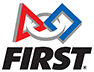
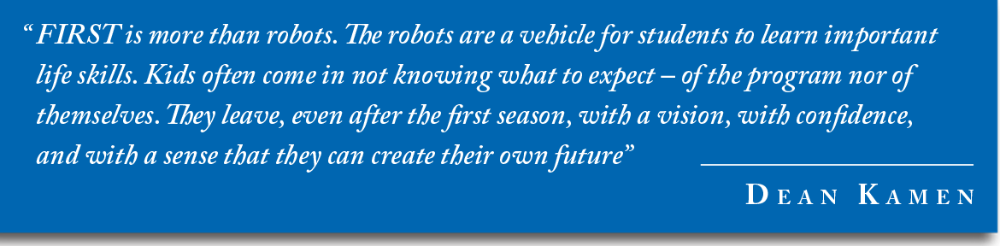

FIRST (For Inspiration and Recognition of Science and Technology) was founded in 1989 to inspire young people's interest and participation in science and technology. Based in Manchester, NH, the 501(c)(3) not-for-profit public charity designs accessible, innovative programs that motivate young people to pursue education and career opportunities in science, technology, engineering, and math, while building self-confidence, knowledge, and life skills.
FIRST is More Than Robots. FIRST participation is proven to encourage students to pursue education and careers in STEM-related fields, inspire them to become leaders and innovators, and enhance their 21 st century work-life skills. Read more about the Impact of FIRST.
The mission of FIRST is to inspire young people to be science and technology leaders and innovators, by engaging them in exciting Mentor-based programs that build science, engineering, and technology skills, that inspire innovation, and that foster well-rounded life capabilities including self-confidence, communication, and leadership.
"To transform our culture by creating a world where science and technology are celebrated and where young people dream of becoming science and technology leaders." Dean Kamen, Founder
Engage kids in kindergarten through high school in exciting, Mentor-based, research and robotics programs that help them become science and technology leaders, as well as well-rounded contributors to society.
Dean Kamen is a prolific inventor, entrepreneur, and tireless advocate for science and technology. His passion and determination to help young people discover the excitement and rewards of science and technology are the cornerstones of FIRST. For over 25 years, Kamen has resolutely led the growth of FIRST to where it is now universally recognized as the leading, not-for-profit STEM engagement program for kids worldwide.